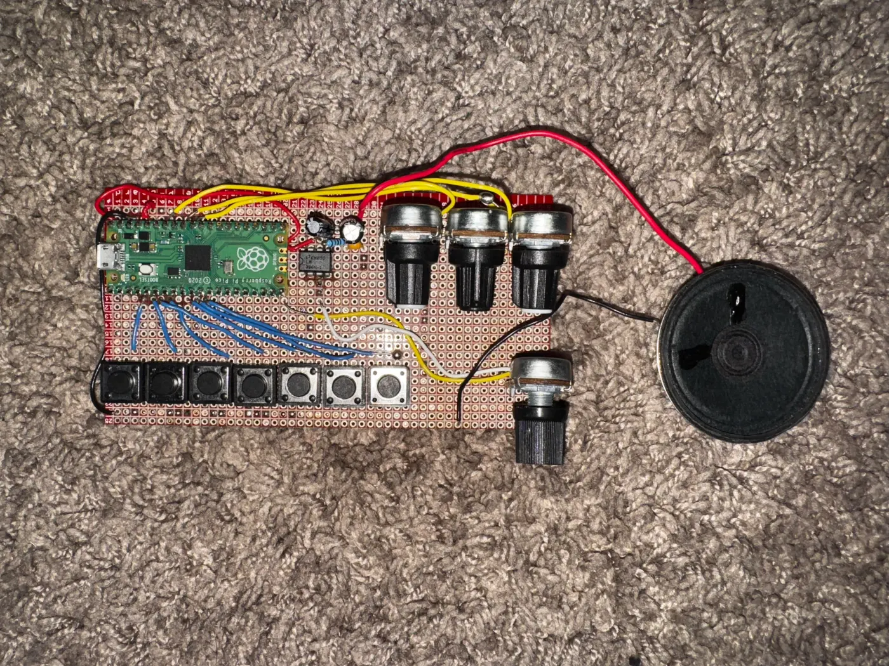
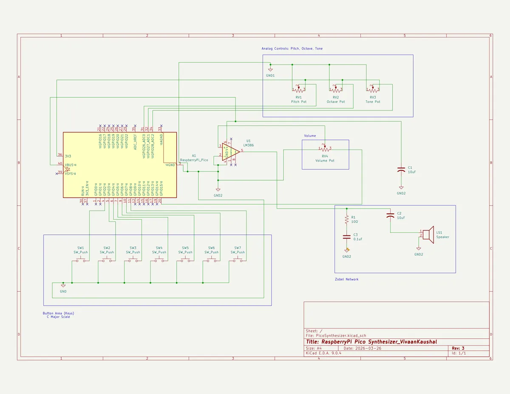

Electronics
Digital Synthesizer
A three-phase monophonic synthesizer built on the Raspberry Pi Pico. You can play the C Major scale with it and you can change the pitch, tone and octave using knobs to make all sorts of sounds. Overall its a very simple bare bones synthesizer with good utility.

A three-phase monophonic synthesizer built on the Raspberry Pi Pico using MicroPython. Each phase adds a layer of hardware and software complexity, culminating in a fully amplified instrument with real-time potentiometer control over pitch, octave, and timbre.
§Schematic

- Phase I — Concept test
- Phase II — Stepped potentiometer control
- Phase III — LM386 amplifier output
- Phase comparison
- Concepts reference
§Phase I — Concept test
File: PiezoBuzzerTest_VKAUS.py
§Overview
Proof-of-concept that establishes the core interaction model: seven buttons map to the C4 major scale, and pressing multiple buttons simultaneously produces a blended chord tone via geometric mean frequency calculation.
§Hardware
| Component | Pin |
|---|---|
| Piezo buzzer | GP15 (PWM) |
| Button — C4 | GP2 |
| Button — D4 | GP3 |
| Button — E4 | GP4 |
| Button — F4 | GP5 |
| Button — G4 | GP6 |
| Button — A4 | GP7 |
| Button — B4 | GP8 |
All buttons wired with internal pull-up resistors. Pin reads HIGH at rest, LOW when pressed.
§Key logic
Chord blending — geometric mean The buzzer is monophonic (one frequency at a time). When multiple buttons are held, a single representative frequency is computed using the geometric mean rather than an arithmetic average. The geometric mean preserves musical interval ratios — it sits proportionally between notes rather than just numerically between them.
combined_freq(pressed_notes):
product = 1.0
for each note in pressed_notes:
product *= frequency[note]
return product ^ (1 / number of notes)
Example:
C4 (261.63 Hz) + G4 (392.00 Hz)
→ geometric mean ≈ 320 Hz (proportionally between C and G)
→ arithmetic mean = 326 Hz (no musical meaning)
Change detection The button combo is compared against the previous loop's combo. The buzzer only updates when the combo changes, avoiding redundant PWM writes every 10ms.
PWM
freqsets pitch in Hzduty_u16sets timbre; 32768 = 50% square wave (full, buzzy tone)- Setting duty to 0 silences output; hardware stays at last frequency
§Pseudocode
DEFINE note_freq: {C4:261.63, D4:293.66, E4:329.63, F4:349.23,
G4:392.00, A4:440.00, B4:493.88}
SETUP buzzer as PWM on GP15
SETUP buttons on GP2–GP8 with pull-up resistors
FUNCTION combined_freq(pressed_notes):
product = 1.0
FOR each note in pressed_notes:
product = product × note_freq[note]
RETURN product ^ (1 / count of pressed_notes)
FUNCTION play(freq):
set PWM frequency to freq
set duty cycle to 32768
FUNCTION stop():
set duty cycle to 0
last_combo = nothing
LOOP forever:
pressed = [note for each button if button is LOW]
IF pressed is empty:
stop()
last_combo = nothing
ELSE IF pressed ≠ last_combo:
freq = combined_freq(pressed)
print note names + freq to console
play(freq)
last_combo = pressed
sleep 10ms
§Phase II — Stepped potentiometer control
File: PiezoWithAnalogControl.py
§Overview
Adds three potentiometers that give real-time control over pitch transposition, octave, and tone (duty cycle / timbre). Continuous ADC values are mapped to discrete steps so knobs behave like detented physical controls.
§Hardware
| Component | Pin |
|---|---|
| Piezo buzzer | GP15 (PWM) |
| Buttons C4–B4 | GP2–GP8 (pull-up) |
| Pot — pitch shift | GP26 (ADC) |
| Pot — octave | GP27 (ADC) |
| Pot — tone | GP28 (ADC) |
§Key logic
ADC noise averaging Even a stationary pot produces slightly jittering ADC readings. Averaging 8 consecutive reads smooths this out so knob state feels stable.
read_pot(adc_pin):
total = 0
repeat 8 times:
total += adc_pin.read_u16() // returns 0–65535
return total / 8
Stepped mapping Maps a smooth 0–65535 ADC range to N discrete positions. Divides the full range into equal-width buckets and returns the bucket index.
stepped(raw_value, steps_list):
n = length of steps_list
index = (raw_value × n) // 65536 // integer divide → bucket
return min(index, n-1) // clamp to last bucket at max reading
Clamping Before writing to the PWM hardware, frequency is clamped to 20–20000 Hz (the audible range). The combination of pitch ratio and octave multiplier could otherwise produce 0 or an arbitrarily large value, which would crash or misbehave on the hardware.
clamp(freq, 20, 20000):
max(20, min(20000, freq))
// min(20000, freq) → never exceeds 20000
// max(20, ...) → never drops below 20
§Knob definitions
| Knob | Steps | Values |
|---|---|---|
| Pitch (GP26) | 7 | −3, −2, −1, 0, +1, +2, +3 semitones → ratios: 2^(n/12) |
| Octave (GP27) | 5 | ×0.25, ×0.5, ×1.0, ×2.0, ×4.0 |
| Tone (GP28) | 5 | Thin (5000), Soft (16384), Full (32768), Warm (49152), Reed (60000) |
§Pseudocode
DEFINE base_notes: {0:261.63, 1:293.66, 2:329.63, 3:349.23,
4:392.00, 5:440.00, 6:493.88}
DEFINE pitch_ratios: [2^(-3/12), 2^(-2/12), 2^(-1/12), 1,
2^(1/12), 2^(2/12), 2^(3/12)]
DEFINE octave_steps: [0.25, 0.5, 1.0, 2.0, 4.0]
DEFINE tone_duties: [5000, 16384, 32768, 49152, 60000]
SETUP PWM on GP15
SETUP buttons on GP2–GP8 (pull-up)
SETUP ADC on GP26, GP27, GP28
FUNCTION play_note(freq, duty):
freq = clamp(freq, 20, 20000)
set PWM frequency to freq
set PWM duty to duty
FUNCTION stop():
set duty to 0
last_debug = nothing
LOOP forever:
raw_pitch = read_pot(GP26)
raw_octave = read_pot(GP27)
raw_tone = read_pot(GP28)
pitch_ratio = pitch_ratios[stepped(raw_pitch, pitch_ratios)]
octave_mult = octave_steps[stepped(raw_octave, octave_steps)]
duty = tone_duties [stepped(raw_tone, tone_duties)]
IF knob labels changed since last loop:
print pitch / octave / tone labels to console
last_debug = current labels
pressed = [index for each button if button is LOW]
IF none pressed:
stop()
ELSE:
product = 1.0
FOR each pressed index i:
product = product × base_notes[i]
geo_mean = product ^ (1 / count of pressed)
final_freq = geo_mean × pitch_ratio × octave_mult
play_note(final_freq, duty)
sleep 10ms
§Phase III — LM386 amplifier output
File: LM386AmpSynth.py
§Overview
Identical control structure to Phase II, but the PWM signal is routed through an LM386 audio amplifier IC before reaching the speaker. Two targeted changes prevent audio artifacts introduced by the amplifier.
§Hardware
| Component | Pin / Location |
|---|---|
| PWM output | GP15 |
| Buttons C4–B4 | GP2–GP8 (pull-up) |
| Pot — pitch | GP26 (ADC) |
| Pot — octave | GP27 (ADC) |
| Pot — tone | GP28 (ADC) |
| LM386 amp | Between GP15 and speaker |
| Speaker | LM386 output |
§Changes from Phase II
1. Reduced duty cycle ceiling The LM386 amplifies the signal. Phase II duty values that sound clean through a piezo overdrive the amp at high volume, causing clipping distortion. Values are pulled back across all five tone steps:
| Label | Phase II | Phase III |
|---|---|---|
| Thin | 5000 | 3000 |
| Soft | 16384 | 10000 |
| Full | 32768 | 20000 |
| Warm | 49152 | 32768 |
| Reed | 60000 | 45000 |
Tune by ear — exact values depend on the gain resistor and speaker used.
2. Frequency reset on stop When duty is set to 0 the output goes silent, but the PWM hardware remains configured at the last audio frequency. The LM386 is sensitive enough to pick up residual switching noise from that carrier and pass it to the speaker as a faint buzz. Setting the frequency to 10 Hz (effectively DC, well below the audible range) on every stop call eliminates this.
FUNCTION stop():
set duty to 0
set PWM frequency to 10 // kills residual carrier noise through LM386
§Pseudocode
DEFINE base_notes, pitch_ratios, octave_steps (same as Phase II)
DEFINE tone_duties: [3000, 10000, 20000, 32768, 45000] // ← reduced
SETUP PWM on GP15
SETUP buttons on GP2–GP8 (pull-up)
SETUP ADC on GP26, GP27, GP28
FUNCTION play_note(freq, duty):
freq = clamp(freq, 20, 20000)
set PWM frequency to freq
set PWM duty to duty
FUNCTION stop():
set duty to 0
set PWM frequency to 10 // ← new vs Phase II
LOOP forever:
read pots → stepped indices → pitch_ratio, octave_mult, duty
IF knob state changed: print labels to console
pressed = [buttons currently held LOW]
IF none: stop()
ELSE:
geo_mean = geometric mean of base_notes[pressed indices]
final_freq = geo_mean × pitch_ratio × octave_mult
play_note(final_freq, duty)
sleep 10ms
§Phase comparison
| Feature | Phase I | Phase II | Phase III |
|---|---|---|---|
| Buttons | 7 (GP2–8) | 7 (GP2–8) | 7 (GP2–8) |
| Potentiometers | none | 3 (GP26–28) | 3 (GP26–28) |
| Output stage | Piezo direct | Piezo direct | LM386 + speaker |
| Duty cycle range | Fixed 32768 | 5000–60000 | 3000–45000 |
| Stop behaviour | duty = 0 | duty = 0 | duty = 0, freq = 10 Hz |
| Chord method | Geometric mean | Geometric mean | Geometric mean |
| Pitch control | none | ±3 semitones | ±3 semitones |
| Octave control | none | ×0.25 – ×4.0 | ×0.25 – ×4.0 |
| Tone control | none | 5 steps | 5 steps |
§Concepts reference
| Term | Meaning |
|---|---|
| PWM | Pulse Width Modulation — pin switches on/off at audio frequency to produce sound |
| Duty cycle | Ratio of on-time to off-time per cycle (0–65535). Controls timbre |
| Pull-up resistor | Holds a pin HIGH by default; pressing the button pulls it LOW |
| Geometric mean | (f1 × f2 × ... × fN)^(1/N) — preserves musical interval ratios across chord tones |
| ADC | Analog-to-Digital Converter — reads pot voltage as integer 0–65535 |
| Stepped mapping | Divides ADC range into N equal buckets; knob snaps to discrete positions |
| Clamping | Forces a value within a min/max range: max(min_val, min(max_val, x)) |
| Dirty checking | Storing previous state and only acting when it changes |
| LM386 | Audio amplifier IC — boosts PWM signal to drive a speaker at audible volume |